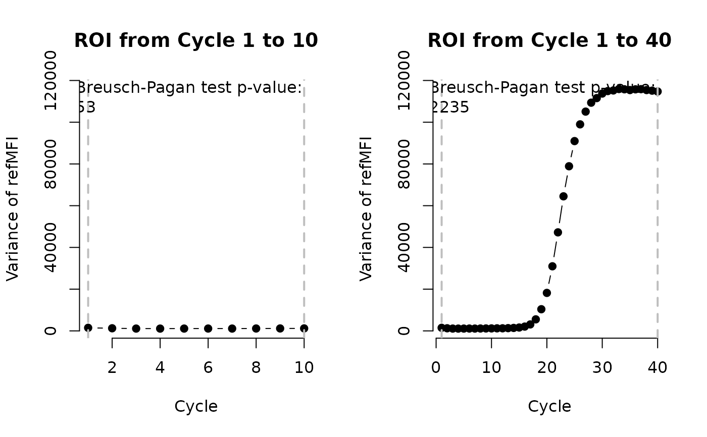

MFIaggr.RdMFIaggr is used for a fast multiple comparison of the cycle dependent variance of the fluorescence.
# S4 method for numeric,numeric MFIaggr(x, y, cyc = 1, fluo = 2:ncol(x), RSD = FALSE, rob = FALSE, llul = c(1,10)) # S4 method for matrix,missing MFIaggr(x, y, cyc = 1, fluo = 2:ncol(x), RSD = FALSE, rob = FALSE, llul = c(1,10)) # S4 method for data.frame,missing MFIaggr(x, y, cyc = 1, fluo = 2:ncol(x), RSD = FALSE, rob = FALSE, llul = c(1,10))
| x | is the column of a data frame for the cycle or data.frame/matrix with whole data. |
|---|---|
| y | are multiple columns of fluorescence values from a
|
| cyc | is the index of column containing the cycle data.
Used only if |
| fluo | are the columns containing the fluorescence data.
Used only if |
| RSD | Setting the option |
| rob | Using the option |
| llul | is a parameter to define the lower and upper data limit (cycle), aka region of interest (ROI) used for the density and quantile plot. |
An object of the class refMFI. refMFI means referenced
Mean Fluorescence Intensity (Roediger et al. 2013).
Stefan Roediger, Michal Burdukiewicz
Roediger S, Boehm A, Schimke I. Surface Melting Curve Analysis with R. The R Journal 2013;5:37--53.
# First Example # Cycle dependent variance of the refMFI using standard measures # (Mean, Standard Deviation (SD)). # Use Standard Deviation (SD) in the plot data(VIMCFX96_60) MFIaggr(VIMCFX96_60[, 1], VIMCFX96_60[, 2:ncol(VIMCFX96_60)])#> Cycle Location (Mean) Deviation (SD) Coefficient of Variance (RSD [%]) #> [1,] 1 2242.727 38.36091 0.01710458 #> [2,] 2 2239.046 35.41414 0.01581662 #> [3,] 3 2247.038 33.29005 0.01481508 #> [4,] 4 2253.128 33.15096 0.01471331 #> [5,] 5 2260.924 33.32822 0.01474097 #> [6,] 6 2267.679 33.58027 0.01480821 #> [7,] 7 2273.712 33.30129 0.01464622 #> [8,] 8 2280.075 33.82549 0.01483525 #> [9,] 9 2287.890 34.16339 0.01493227 #> [10,] 10 2294.465 34.49325 0.01503324 #> [11,] 11 2301.594 35.03292 0.01522116 #> [12,] 12 2310.285 35.21360 0.01524210 #> [13,] 13 2322.723 36.33473 0.01564316 #> [14,] 14 2340.164 37.63392 0.01608175 #> [15,] 15 2370.699 40.15900 0.01693973 #> [16,] 16 2420.950 45.38881 0.01874835 #> [17,] 17 2513.297 55.64258 0.02213928 #> [18,] 18 2663.360 74.34556 0.02791419 #> [19,] 19 2875.179 101.90039 0.03544140 #> [20,] 20 3120.010 134.91869 0.04324304 #> [21,] 21 3421.430 175.94752 0.05142514 #> [22,] 22 3727.431 217.30545 0.05829899 #> [23,] 23 3996.705 253.93554 0.06353622 #> [24,] 24 4190.099 280.88966 0.06703653 #> [25,] 25 4346.798 301.59554 0.06938339 #> [26,] 26 4458.587 314.61245 0.07056326 #> [27,] 27 4533.459 324.16516 0.07150503 #> [28,] 28 4591.216 330.70488 0.07202991 #> [29,] 29 4632.899 334.00090 0.07209329 #> [30,] 30 4659.025 337.24954 0.07238630 #> [31,] 31 4680.044 339.01349 0.07243810 #> [32,] 32 4695.519 339.43440 0.07228901 #> [33,] 33 4706.231 340.45068 0.07234041 #> [34,] 34 4710.794 340.26554 0.07223104 #> [35,] 35 4718.904 339.72353 0.07199205 #> [36,] 36 4729.840 340.23991 0.07193476 #> [37,] 37 4735.405 340.35774 0.07187510 #> [38,] 38 4739.859 339.72936 0.07167499 #> [39,] 39 4742.384 339.30851 0.07154809 #> [40,] 40 4743.073 338.72074 0.07141378#alternative usage MFIaggr(VIMCFX96_60)#> Cycle Location (Mean) Deviation (SD) Coefficient of Variance (RSD [%]) #> [1,] 1 2242.727 38.36091 0.01710458 #> [2,] 2 2239.046 35.41414 0.01581662 #> [3,] 3 2247.038 33.29005 0.01481508 #> [4,] 4 2253.128 33.15096 0.01471331 #> [5,] 5 2260.924 33.32822 0.01474097 #> [6,] 6 2267.679 33.58027 0.01480821 #> [7,] 7 2273.712 33.30129 0.01464622 #> [8,] 8 2280.075 33.82549 0.01483525 #> [9,] 9 2287.890 34.16339 0.01493227 #> [10,] 10 2294.465 34.49325 0.01503324 #> [11,] 11 2301.594 35.03292 0.01522116 #> [12,] 12 2310.285 35.21360 0.01524210 #> [13,] 13 2322.723 36.33473 0.01564316 #> [14,] 14 2340.164 37.63392 0.01608175 #> [15,] 15 2370.699 40.15900 0.01693973 #> [16,] 16 2420.950 45.38881 0.01874835 #> [17,] 17 2513.297 55.64258 0.02213928 #> [18,] 18 2663.360 74.34556 0.02791419 #> [19,] 19 2875.179 101.90039 0.03544140 #> [20,] 20 3120.010 134.91869 0.04324304 #> [21,] 21 3421.430 175.94752 0.05142514 #> [22,] 22 3727.431 217.30545 0.05829899 #> [23,] 23 3996.705 253.93554 0.06353622 #> [24,] 24 4190.099 280.88966 0.06703653 #> [25,] 25 4346.798 301.59554 0.06938339 #> [26,] 26 4458.587 314.61245 0.07056326 #> [27,] 27 4533.459 324.16516 0.07150503 #> [28,] 28 4591.216 330.70488 0.07202991 #> [29,] 29 4632.899 334.00090 0.07209329 #> [30,] 30 4659.025 337.24954 0.07238630 #> [31,] 31 4680.044 339.01349 0.07243810 #> [32,] 32 4695.519 339.43440 0.07228901 #> [33,] 33 4706.231 340.45068 0.07234041 #> [34,] 34 4710.794 340.26554 0.07223104 #> [35,] 35 4718.904 339.72353 0.07199205 #> [36,] 36 4729.840 340.23991 0.07193476 #> [37,] 37 4735.405 340.35774 0.07187510 #> [38,] 38 4739.859 339.72936 0.07167499 #> [39,] 39 4742.384 339.30851 0.07154809 #> [40,] 40 4743.073 338.72074 0.07141378#> Failed to get face: @ , 0# Example # Use of MFIaggr to test for heteroskedasticity using the Breusch-Pagan # test. The data were aggregated with the MFIaggr function and assigned to # the object res. The standard deviation was transformed to the variance. # The plot shows the cycle dependent variance. # First cycles 1 to 10 of 96 qPCR replicate amplification curves were # analyzed. Next the cycles 1 to 40 of the same amplification curve data # were analyzed. The Breusch-Pagan confirmed the heteroskedasticity in the # amplification curve data. par(mfrow = c(1,2), bty = "n") res <- MFIaggr(VIMCFX96_60[, 1], VIMCFX96_60[, 2:ncol(VIMCFX96_60)], llul = c(1,10)) head(res)#> Cycle Location (Mean) Deviation (SD) Coefficient of Variance (RSD [%]) #> [1,] 1 2242.727 38.36091 0.01710458 #> [2,] 2 2239.046 35.41414 0.01581662 #> [3,] 3 2247.038 33.29005 0.01481508 #> [4,] 4 2253.128 33.15096 0.01471331 #> [5,] 5 2260.924 33.32822 0.01474097 #> [6,] 6 2267.679 33.58027 0.01480821plot(res[, 1], res[, 3]^2, xlab = "Cycle", ylab = "Variance of refMFI", xlim = c(1,10), main = "ROI from Cycle 1 to 10", pch = 19, type = "b") abline(v = c(1,10), col = "grey", lty = 2, lwd = 2) legend("top", paste0("Breusch-Pagan test p-value: \n", format(summary(res)[5], digits = 2)), bty = "n")#> Mean: 2265 #> Median: 2268 #> Standard deviation: 38.76 #> Median Absolute Deviation: 38.62 #> Interquartile Range: 53.14 #> Medcouple: -0.1092 #> Skewness: -0.2485 #> SNR: 58.42 #> VRM: 0.6635 #> Number of NAs: 0 #> Intercept: 2230 #> Slope: 6.311 #> R squared: 0.9804 #> Breusch-Pagan Test p-value: 0.03628#> Cycle Location (Mean) Deviation (SD) Coefficient of Variance (RSD [%]) #> [1,] 1 2242.727 38.36091 0.01710458 #> [2,] 2 2239.046 35.41414 0.01581662 #> [3,] 3 2247.038 33.29005 0.01481508 #> [4,] 4 2253.128 33.15096 0.01471331 #> [5,] 5 2260.924 33.32822 0.01474097 #> [6,] 6 2267.679 33.58027 0.01480821plot(res[, 1], res[, 3]^2, xlab = "Cycle", ylab = "Variance of refMFI", main = "ROI from Cycle 1 to 40", pch = 19, type = "b")legend("top", paste0("Breusch-Pagan test p-value: \n", format(summary(res)[5], digits = 2)), bty = "n")#> Mean: 3441 #> Median: 3249 #> Standard deviation: 1114 #> Median Absolute Deviation: 1454 #> Interquartile Range: 2235 #> Medcouple: 0.1822 #> Skewness: 0.5183 #> SNR: 3.09 #> VRM: 360.4 #> Number of NAs: 0 #> Intercept: 1620 #> Slope: 88.86 #> R squared: 0.885 #> Breusch-Pagan Test p-value: 0.4748